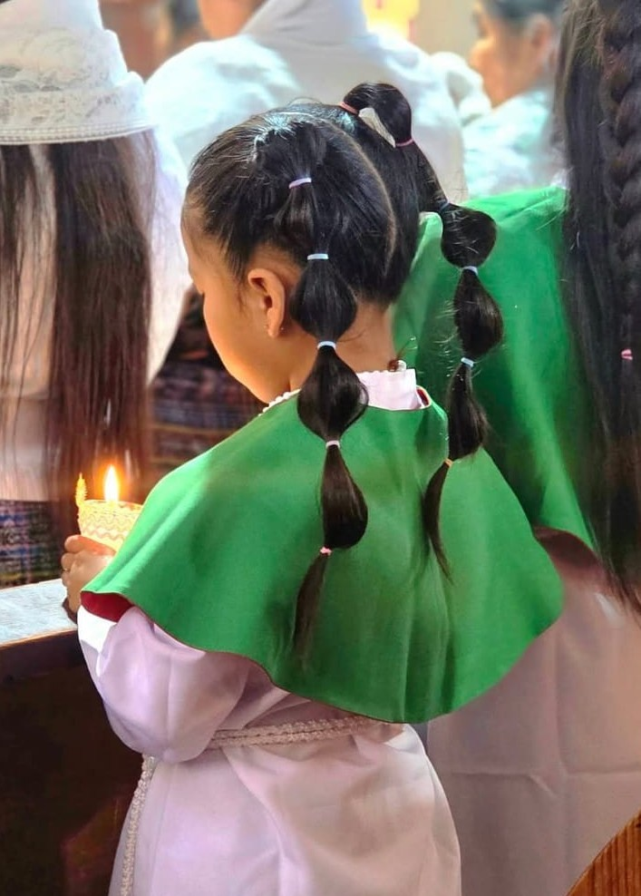
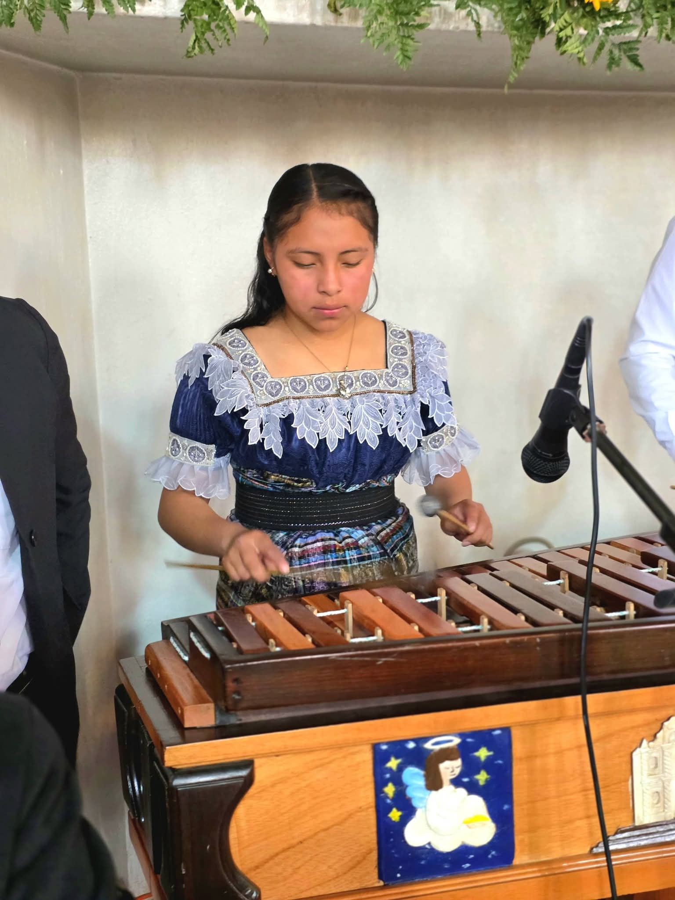
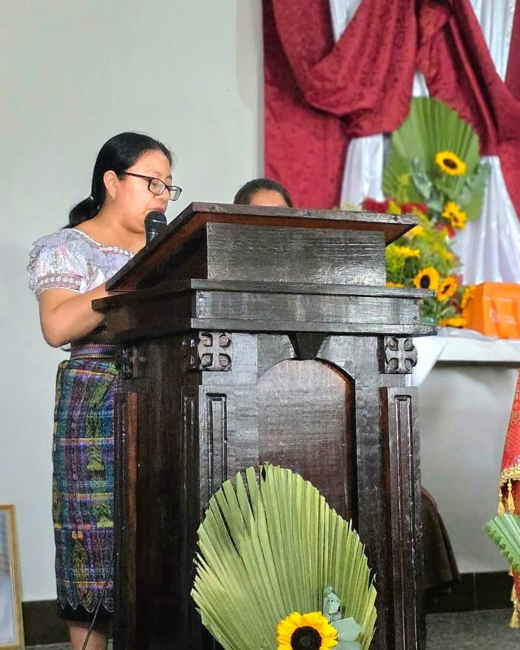
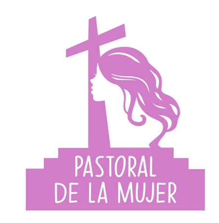
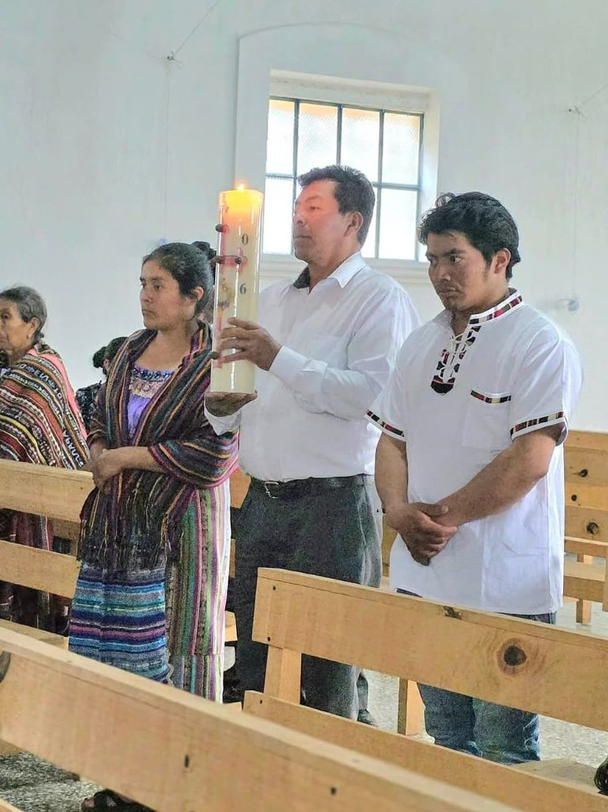
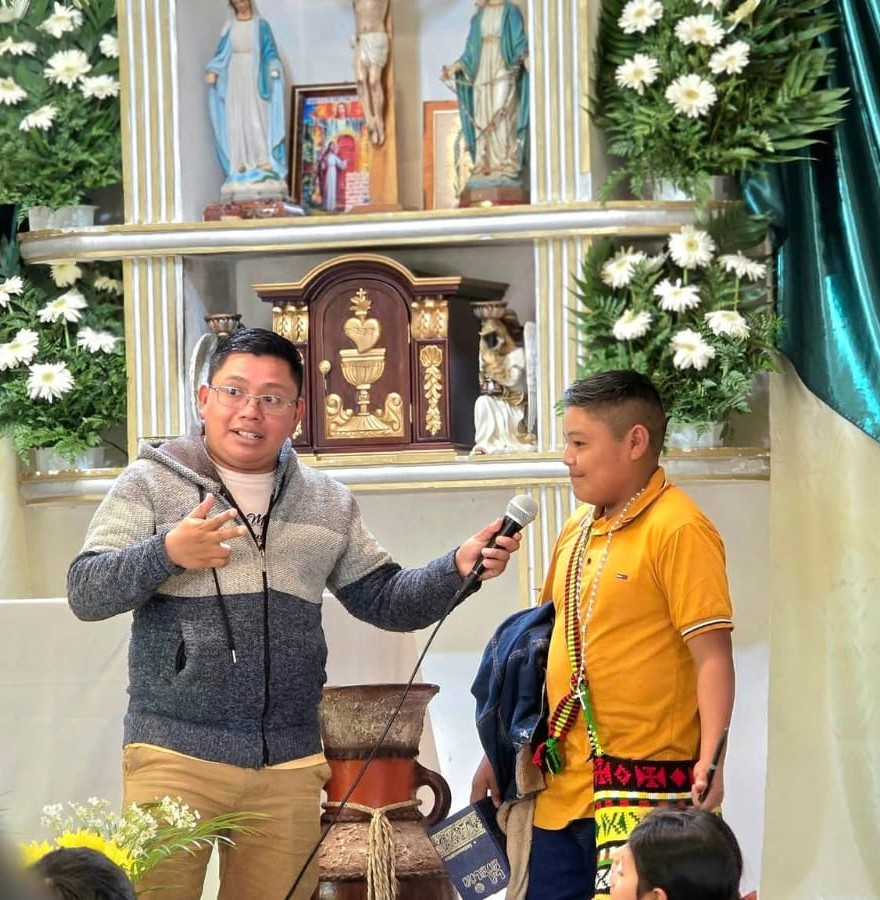
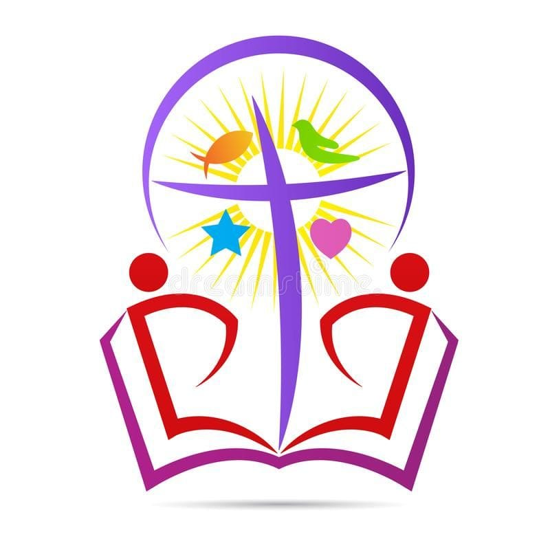
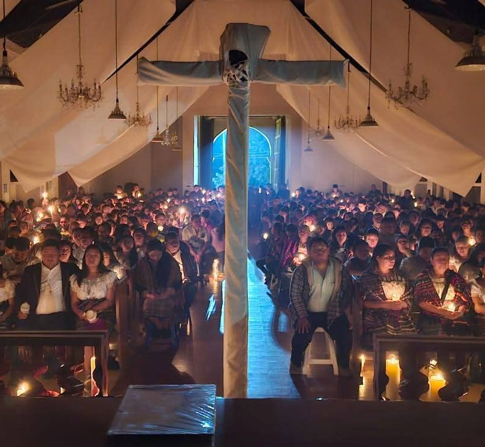

"Pongan al servicio de los demás los dones que cada uno ha recibido"

Los monaguillos son los encargados de asistir al sacerdote en el altar durante la Santa Misa con devoción y orden. Ser monaguillo no es solo cumplir una función en la liturgia; es responder con el corazón a un llamado divino.

Los coros no solo interpretan cantos; son la voz que guía, anima y eleva la fe de toda la asamblea en la Santa Misa. A través de cada melodía,instrumento y nota musical, los integrantes del coro entregan su talento como una ofrenda viva.

La liturgia es la celebración pública y oficial de la Iglesia donde nos encontramos comunitariamente con Dios para darle gloria y renovar nuestra fe. Sirve para fortalecer nuestra vida espiritual, orar unidos como familia y vivir activamente los sacramentos en comunidad.

La Pastoral de la Mujer es un espacio de encuentro, formación y apoyo mutuo donde se promueve la dignidad, el liderazgo y la fe de la mujer a la luz del Evangelio. Sirve para acompañarle en su crecimiento personal y espiritual, fortaleciendo su rol activo tanto en la familia como en la sociedad y en la Iglesia. Le invitamos cordialmente a sumarse a este enriquecedor grupo

La pastoral misionera es el servicio eclesial dedicado a llevar el mensaje del Evangelio y el amor de Dios a quienes más lo necesitan, dentro y fuera de nuestra comunidad. Sirve para transformar vidas, renovar la fe a través del testimonio de servicio y construir una sociedad más solidaria y esperanzadora.

La catequesis es la noble labor eclesial de formar en la fe, acompañar el crecimiento espiritual y preparar a niños, jóvenes y adultos para recibir los sacramentos. Sirve para transmitir las enseñanzas del Evangelio, educar en valores cristianos y fortalecer las raíces de la comunidad creyente. Le invitamos cordialmente a sumarse a este servicio como catequista

La Pastoral Social es la acción organizada de la Iglesia encargada de promover la solidaridad, la justicia y la caridad fraterna con los más necesitados y vulnerables. Sirve para transformar realidades mediante la ayuda humanitaria, el acompañamiento comunitario y el servicio activo a favor de la dignidad humana. Le invitamos de corazón a sumarse a esta noble labor

La Pastoral Juvenil es un espacio dinámico de encuentro, formación y fraternidad donde los jóvenes fortalecen su fe, descubren su propósito y comparten la alegría del Evangelio. Sirve para orientar el crecimiento integral de la juventud, promover el liderazgo cristiano y construir una red de apoyo basada en valores eclesiales. Le invitamos cordialmente a sumarse a esta vibrante comunidad.
Le recordamos que nuestra comunidad está en constante crecimiento; para resolver cualquier inquietud o conocer nuevos ministerios que se vayan sumando, no dude en contactarnos a través del número telefónico disponible en este sitio.